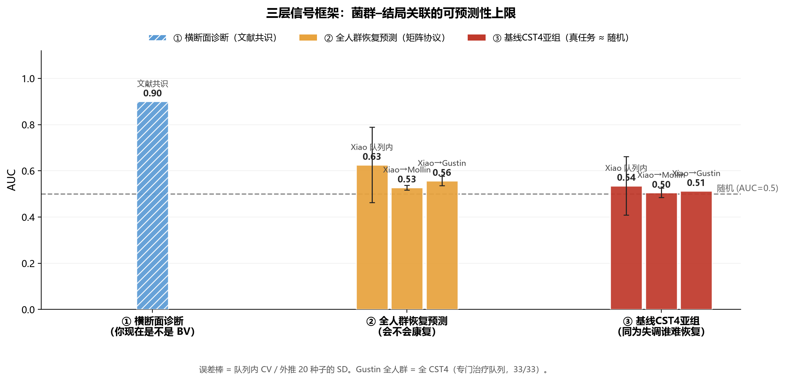
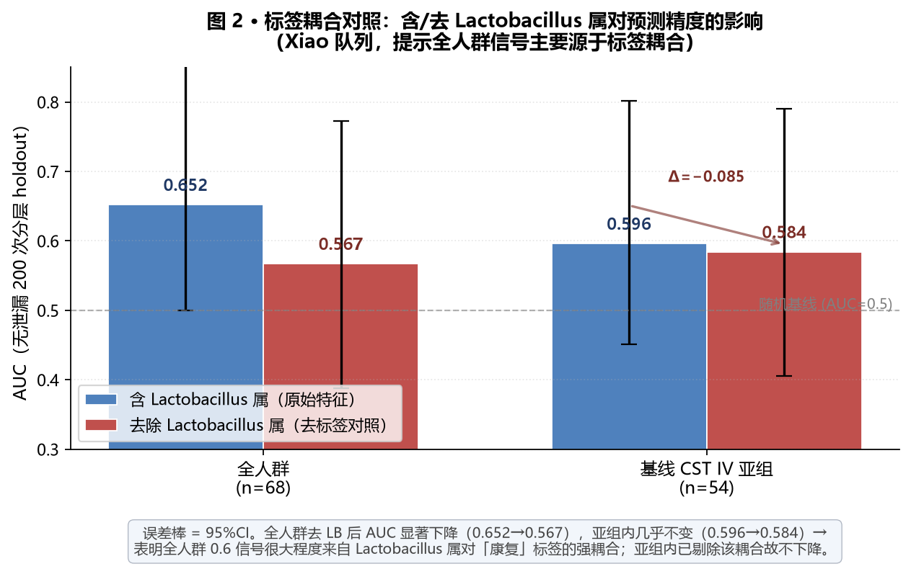
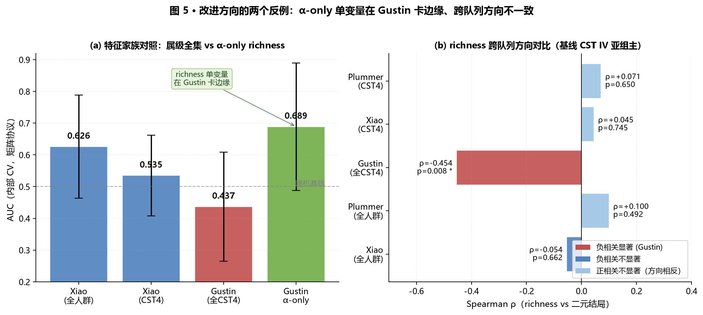
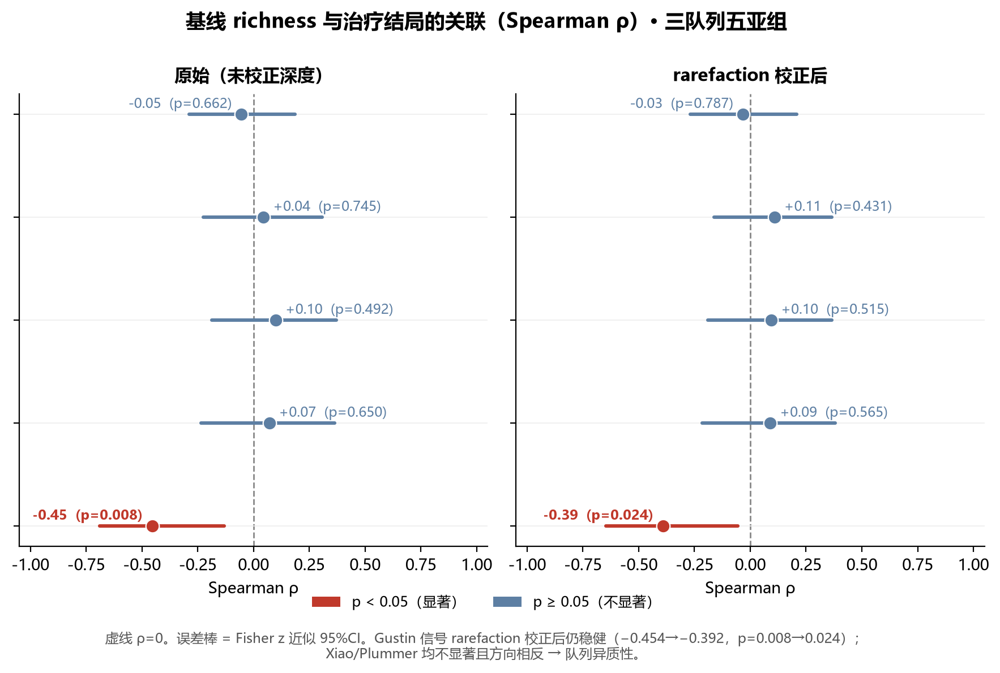
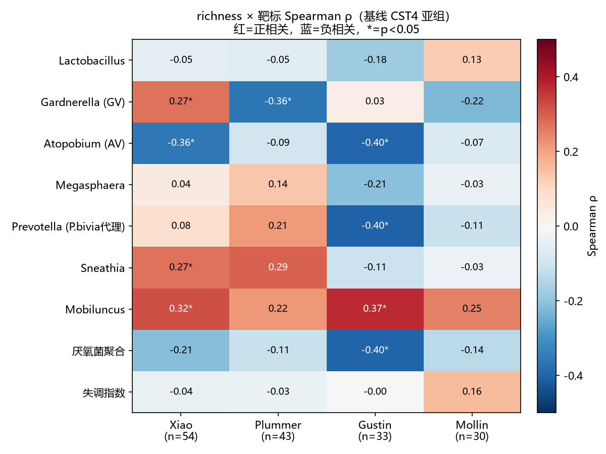

投稿标题（英文，待定稿后翻译）：Limited predictive value of the pretreatment vaginal microbiome for microbiological recovery (Lactobacillus dominance) after BV treatment: an assessment across four public cohorts
中文稿 v1.1 · 2026-09-01 · 依据框架 v3.2 撰写；图 2/4/5 新增嵌入 结局定位（全文边界，勿越界）：本研究结局 =「随访乳杆菌优势度 ≥50% 的菌群学康复」，是替代结局（surrogate），作为临床治愈的生态学代理，非临床硬结局（Amsel/Nugent）。全文措辞严格落在「预测菌群学康复」边界内。
背景：细菌性阴道病（BV）治疗后复发率高，30 天内可达 30%–50%。既往研究多报告「治疗前菌群可预测结局」，但其预测对象常为全人群（含基线菌群健康者），而非真正的临床治疗对象——基线菌群失调（CST IV）患者；该人群内的真实可预测性尚不清楚。
方法：整合四个公开 16S rRNA 队列（Xiao 2016 / Plummer 2023 / Mollin 2022 / Gustin 2022），统一结局口径为菌群学康复（随访乳杆菌相对丰度跨越 50% 阈值，作为临床治愈的生态代理）。主分析以三队列属级交集（83 属）为统一特征空间、LASSO 逻辑回归建模、20 种子的内层交叉验证为主口径（随机森林、XGBoost 作敏感性）；验证含队列内重复分层 holdout、两条跨平台外推（Xiao 训练 → Mollin / Gustin 测试）、leave-one-cohort-out 双向交叉、基线 CST IV 亚组分层分析（含去除 Lactobacillus 对照）；并做特征家族对照（α 多样性 vs 属级相对丰度）与分辨率对照（属级 vs 种级）、时间点对照（D0 vs D7）。
结果：全人群层面治疗前菌群有中等预测力（Xiao 队列内 CV AUC 0.626），但该信号主要来自结局定义与 Lactobacillus 的耦合（全人群去除 Lactobacillus 后 AUC 0.652→0.567 显著下降）。聚焦临床治疗对象（基线 CST IV 亚组）后，各队列内部与外推均接近随机（Xiao 内部 0.535；Xiao→Mollin 0.501、Xiao→Gustin 0.512，95%CI 均含 0.5），且不被测量维度改善：种级不优于属级（Xiao 0.511→0.492、Gustin 0.529→0.511），D7 早期反应未复现（D7 单独 0.483 最低，D7 转好者 30 天持续康复仅 7/20，PPV 0.35）。失调总量（richness）与结局的关联呈队列异质性：仅在 Gustin 队列达到名义显著（种级 richness AUC 0.776，ρ=−0.454，p=0.008），且经多重稳健性检验（rarefaction 校正、控制测序深度的偏相关与 logistic 调整、bootstrap/leave-one-out/置换）在队列内部稳健；但 Xiao/Plummer 队列方向相反且不显著，未跨队列复现；连续型结局下关联方向一致（ρ=−0.565/−0.557，p=0.001），呈单调负相关。该信号仅在单队列内部稳健、未跨队列复现，应解读为提示性、未确证的队列特异性线索。
结论：在基线 CST IV 亚组（真正的治疗对象）内，治疗前横断面 16S 检测对菌群学康复的区分接近随机，且精度不被分辨率提升或时间点后移改善——精度受限可能源于结局的生物学决定因素（复发/再定植主导）。richness–结局关联仅在单队列内部稳健、跨队列消失，提示其具队列特异性，须独立验证后方可临床应用。本研究警示：以全人群 AUC 代表临床预测力、对单队列信号过度解读，可能高估治疗前菌群检测的预后价值。
关键词：阴道菌群；细菌性阴道病；CST IV；预测价值有限；治疗结局；16S rRNA；负结果
细菌性阴道病（BV）是育龄期女性最常见的阴道感染性疾病，全球患病率估计在 23%–29% 之间，并与盆腔炎、早产、性传播感染易感性增加等多种不良生殖结局相关 [3,4,5]。尽管甲硝唑或克林霉素短期治愈率较高，但复发极为常见——治疗后 12 个月内复发率可高达 50% 以上 [6]。这一「高复发」困境促使研究者长期追问：能否在治疗前，就预测谁会复发、谁会康复？
以 Ravel 等提出的阴道群落状态类型（community state types, CST）为框架 [7]，CST IV 型（厌氧菌主导、物种多样性高）与 BV 直接对应，是临床治疗的主要对象。菌群与 BV 的横断面关联极强——基于 16S 测序的菌群构成几乎可以完美区分「是否处于 BV 状态」（诊断层面 AUC 常 >0.9）。然而，从「横断面诊断」到「纵向预后预测」是本质不同的任务：前者回答「你现在是不是 BV」，后者回答「同为失调者，谁治疗后更难恢复」。
近十年来，大量研究探索「基于菌群的 BV 复发预测」。Xiao 等基于治疗早期（D7）菌群构建的五组分面板报告预测复发 AUC 约 0.73/0.69 [14]；Plummer 等报告治疗前 Prevotella、治疗后 Gardnerella 与复发相关 [17]；Gustin 等报告治疗前菌群 richness 与甲硝唑治疗后复发相关 [20]。但这些研究普遍存在一个方法学空白：多数在全人群层面评估预测力，未区分「基线即失调者（临床治疗对象）」与「基线健康者」。由于结局定义（康复 = 乳杆菌优势）与基线乳杆菌丰度高度耦合，全人群层面的预测力可能部分源于「基线乳杆菌高者必康复」这一定义层面的机械关联（标签耦合），而非真实的预后信息。此外，既往文献中「α 多样性/qPCR 浓度有信号、属级相对丰度无信号」的矛盾从未在同一队列、同一亚组、同一结局口径下被系统对照检验。
本研究旨在正面填补上述空白。我们整合四个公开 16S 队列、统一菌群学结局口径，在「全人群 vs 基线 CST IV 亚组」两个层面分层评估治疗前菌群对菌群学康复（乳杆菌优势）的预测精度，并系统检验三个潜在「改进方向」——分辨率提升（种级 vs 属级）、时间点后移（D7 早期反应）、特征家族选择（α 多样性 vs 相对丰度）——是否能提高这一预测精度。本研究的核心预设是：预测精度的上限由结局的生物学决定因素（复发/再定植主导）所限，而非测量方式；若成立，则治疗前横断面菌群构成的预后价值有限。
我们纳入满足以下条件的公开纵向 16S rRNA 队列：① 公开可获取原始测序数据，且具有样本级「基线→随访」配对；② BV 患者接受标准甲硝唑治疗并有明确随访结局；③ 基线可判定 CST（可计算乳杆菌相对丰度）；④ 覆盖技术异质性（测序平台 454 vs MiSeq、测序区 V1-V3/V3-V4/V4、生信管线 DADA2 vs 原始管线、参考库 SILVA vs RDP），为跨平台/跨管线/跨人群三重外推提供证据基础。排除伴侣干预或含男性样本的队列（StepUp-1 / StepUp-2）、无结局标签的队列（NuSwab）及水对照。建模纳入标准（预先设定）：结局率（康复占比）位于 10%–90% 区间的队列纳入主建模；结局率超出此区间的队列仅作边界情形说明、不纳入 LASSO 建模（避免判别学习在严重类不平衡下失效）。最终纳入四个队列（表 1）：
| 队列 | 登录号 | 平台 | 测序区 | 配对样本 | 基线 CST IV | 结局定义 |
|---|---|---|---|---|---|---|
| Xiao 2016 [13] | PRJNA302078 | 454 GS Junior | V1-V3 SE | 68 对（D0→D30） | 54/68 | CST（乳杆菌阈值 50%） |
| Plummer 2023 [17] | PRJNA592384 | Illumina MiSeq | V3-V4 PE | 49 对（M0→M1） | 43/49 | CST（乳杆菌阈值 50%） |
| Mollin 2022 [19] | SI 表重建 | Illumina MiSeq | V4 | 33 对（V1→V2） | 30/33 | CST（乳杆菌阈值 50%） |
| Gustin 2022 [20] | PRJNA691964 | Illumina MiSeq | V4 2×150 | 33 例（V1→V2→V3；101 runs） | 33/33 | CST（乳杆菌主导） |
其中 Gustin 队列（CONRAD BV 试验）为专门的治疗队列，33 例基线全部为 CST IV，其「全人群」即「基线 CST IV 亚组」；这一结构特点使其成为检验「标签耦合」与「亚组内真实预测力」的关键对照。
Xiao/Plummer/Gustin 三个队列的 fastq 统一以 DADA2 重跑 [21]（Xiao truncLen=450、maxEE=2；Plummer c(240,220)/c(2,2)；Gustin 2×150 经 merge 校准），以 SILVA v138.1 训练集进行分类学注释 [22]（assignTaxonomy tryRC=TRUE）。Mollin 队列因原始数据限制，采用原文补充材料表重建，作为管线异质性的天然纳入。
特征分两个家族：属级相对丰度（tax_glom 聚合至属，出现率 ≥5% 过滤，log1p 变换后 StandardScaler 标准化）；α 多样性标量（Shannon、Chao1、ASV richness、Pielou evenness，以及种级注释的检出种计数 species_observed）。richness 主口径定义为 species_observed（SILVA 种级注释的检出种计数）。相对丰度特征采用 log1p 变换而非 CLR（centered log-ratio），因后者在大量零值下不稳定；组成性约束（相对丰度加和为 1）对 richness–乳杆菌关联的影响见 4.5 局限。
跨队列特征空间对齐：主分析（三队列复现）特征空间 = Xiao/Mollin/Gustin 三队列属名交集 83 属；靶标组合分析另用 Xiao/Plummer/Gustin 交集 65 属；Gustin 单队列全集为 179 属。种级对照采用 SILVA 种级聚合（种级注释率：Xiao 69.9%、Plummer 62.7%、Gustin 49.1%）。
结局定义为 随访时点乳杆菌相对丰度 ≥ 50%（即菌群学康复——此处「菌群学」强调该康复是用菌群检测指标判定的，而非医生在诊室判定的临床治愈；本研究结局为菌群学替代结局，作为临床治愈的生态学代理，非临床硬结局）。核心分层为基线 CST IV 亚组（基线乳杆菌 <50%），即临床治疗对象，为主分析人群。敏感性分析：① 阈值在 0.2–0.7 间遍历；② 结局精细化——连续型结局（随访乳杆菌丰度 log1p、恢复幅度 ΔLB = 随访 − 基线）以检验结论对结局粒度（二元 vs 连续）的稳健性。临床硬结局（Amsel/Nugent 复发）因样本级标签不可得，仅在局限中说明（见 4.5）。
主分析模型为 LASSO 逻辑回归（L1 正则，liblinear）；随机森林与 XGBoost 作敏感性分析（结论一致，见补充材料）。正则化参数 λ 在每次训练/测试划分内部、仅用训练折经交叉验证重新估计，测试折完全不参与 λ 选择（嵌套交叉验证结构），杜绝数据泄漏；四条分析管线（主矩阵、leave-one-cohort-out、holdout、train_main）的嵌套结构已逐管线核实一致，正则化网格定义与实现见开源代码。验证策略四层：① 队列内重复分层 holdout（60/40，无泄漏）；② 跨平台外推（Xiao 训练 → Mollin / Gustin 测试，20 种子；另做 leave-one-cohort-out 双向交叉——Xiao / Mollin / Gustin 轮流作训练集、其余队列作外部验证，检验阴性结论是否依赖训练队列选择）；③ 基线 CST IV 亚组分层分析（含去除 Lactobacillus 对照与 Spearman 检验）；④ 合并 5 折 CV 仅作诊断、不进正文。指标：内部 CV 报 AUC ±SD；外推报 seed-mean bootstrap 95%CI（对 20 个随机种子各划分的测试集预测做 bootstrap 重抽样求 AUC 分布，该区间反映测试集抽样变异，条件于训练队列 Xiao）。
随机种子主分析 RNG=42，稳健性多种子。多重比较校正：α×分辨率 120 项矩阵采用 BH-FDR 校正评估；连续结局（多结局 × 多队列）的相关性检验同样纳入 BH-FDR 校正。检验分类：confirmatory（先验假设检验） = Gustin richness 方向性复现（对 Gustin 2022 已发表方向性先验的独立再分析确认）；exploratory（探索性） = 其余全部，仅作描述不作推断。主分析与敏感性分析于分析前区分：主分析 = LASSO-LR 主模型 + Xiao 训练→外推 + 菌群学康复二元结局；双向交叉、标签耦合对照、分辨率/时间点/特征家族对照、连续结局等为敏感性或探索性分析。richness 内部稳健性检验：rarefaction 校正、控制测序深度（log depth）的偏相关与 logistic 多变量调整、leave-one-out、置换检验 1000 次（p 值分辨率上限 0.001）；另以置换检验（5000 次）考察 richness×测序深度交互。功效分析：最小可检测 AUC（MDE）采用单标志物 AUC 对 0.5 的 Hanley–McNeil 双侧检验公式（pROC::power.roc.test），α=0.05、检验功效 0.8；三队列有效样本与结局比例——Xiao n=54（康复率 0.50）、Plummer n=43（康复率 0.91，超出建模纳入标准）、Gustin n=33（康复率 0.64）。软件：Python 3.12（scikit-learn、xgboost）、R 4.6.1（DADA2、phyloseq）、SILVA v138.1。
分析范式说明：本研究非传统 meta 分析，而是个体水平多队列整合（IPD）——对原始 fastq 统一重跑 DADA2、统一结局口径、统一模型协议后分别建模，首要终点为跨队列复现性（方向一致性）而非合并效应量。当队列异质性真实存在时，随机效应合并会用 pooled 估计掩盖「单队列稳健、跨队列消失」的异质性结构，故本研究刻意不合并，而以森林图 + 异质性检验 + 功效归因替代。
菌群与 BV 的关联强度随任务层次的改变而剧烈衰减（图 1）：横断面诊断层面（「你现在是不是 BV」）菌群构成区分度极高（文献共识 AUC >0.9）；全人群恢复预测层面（「会不会康复」）中等（Xiao 队列内 0.626、Xiao→Mollin 0.528、Xiao→Gustin 0.556）；而聚焦基线 CST IV 亚组（「同为失调者，谁更难恢复」）后接近随机（Xiao 内部 0.535、Xiao→Mollin 0.505、Xiao→Gustin 0.512）。这一衰减提示：从诊断到预后的跨越，本质上是两个信息量不同的任务。

图 1 配套说明：橙色虚线 0.5 为随机参照；第 2 层 Xiao→Mollin / Xiao→Gustin 误差棒为 20 种子 bootstrap 95%CI，反映测试集抽样变异，条件于训练队列 Xiao；第 3 层 Xiao→Mollin 0.50、Xiao→Gustin 0.51 均含 0.5 区间，统计上无法与随机区分。
全人群层面 Xiao 队列内 CV AUC 0.626±0.163（n=68），无泄漏 holdout 0.652 [0.500, 0.797]，跨平台外推 0.521（→Mollin）、0.556（→Gustin）——「治疗前菌群可预测结局」在全人群层面成立。但这一信号主要来自结局定义与 Lactobacillus 的耦合：全人群去除 Lactobacillus 特征后 AUC 由 0.652 降至 0.567（显著下降），提示基线乳杆菌高者「必康复」的定义层面机械关联贡献了大部分预测力。

图 2 配套说明：误差棒为 95%CI（去 LB 后区间按 holdout SD×1.96 估）；亚组内"无下降"说明负结果干净、不依赖单一特征；全人群 0.6 信号经此对照被部分归因于定义层面的机械关联。
聚焦临床治疗对象后，构成层预测力在多个独立证据中一致接近随机（表 2）：
| 证据 | 队列/路径 | AUC（95%CI） | 判读 |
|---|---|---|---|
| 队列内（矩阵协议） | Xiao CST4（n=54） | 0.535±0.127 | ≈随机 |
| 队列内（无泄漏 holdout） | Xiao CST4 | 0.596 [0.388, 0.802] | CI 含 0.5 |
| 跨平台外推 | Xiao→Mollin CST4 | 0.501 [0.299, 0.714] | ≈随机 |
| 跨平台外推 | Xiao→Gustin CST4 | 0.512 [0.296, 0.729] | ≈随机 |
| 队列内 | Gustin 内部（全 CST4） | 0.436 | ≈随机 |
亚组内去除 Lactobacillus 对照（0.596→0.584）几乎不变，说明亚组层面的负结果干净、不依赖单一特征；而单特征 Lactobacillus 本身仍有弱关联（Spearman ρ=0.306，p=0.025），说明「模型预测力弱」≠「生物学无关」，而是信息量不足以支撑个体预测。Mollin 队列内点估计 0.60–0.65，但 n=30 小样本、holdout 区间宽（[0.36, 0.92]）覆盖 0.5，统计上无结论，故不纳入「≈随机复现」主证据。Plummer 队列基线 CST IV 亚组结局率 91%（43 例中 39 例康复、仅 4 例未康复），超出预先设定的建模纳入标准（结局率 10%–90%），判别学习在严重类不平衡下失效（LASSO 退化为空模型、AUC 恒 0.5），故不纳入主建模，仅作结局偏斜的边界情形说明、并用于 richness 方向与生物学一致性检验。
跨平台/跨管线/跨人群三重稳健：上述「≈随机」结论在 454/MiSeq 不同平台、DADA2/原始管线不同生信流程、SILVA/RDP 不同参考库、三个独立团队的数据下一致复现，审稿人所担心的「偶然性」得到缓解。模型族与特征变换稳健：将 L1 换为 elastic-net（α=0.5）或 ridge(L2)、或以 CLR 替代 log1p 后，CST4 亚组 AUC 均保持 ≈ 随机（0.47–0.59，附表 S8），即阴性结论不依赖正则化族或组成性数据处理方式（CLR 结论在 1e-2 至 1e-6 四档伪计数下一致）。功效限定：亚组内「≈随机」的判读受样本量所限——按功效框架（见 3.5），Xiao CST4（n=54）以 80% 功效仅能排除 AUC≥0.71 的大效应，0.5–0.71 区间的弱预测价值无法排除。故亚组结论的准确表述为「未检出达到大效应（AUC≥0.71）的预测信号」，而非「证明不存在任何预测价值」。
留一队列双向交叉（leave-one-cohort-out）：为检验阴性结论是否依赖训练队列的选择，进一步做双向交叉——Xiao、Mollin、Gustin 轮流作训练集、其余队列作外部验证（全矩阵 12 个训练-验证组合，表 3）。以 Xiao 或 Mollin 为训练集的 8 个组合（均为非空模型）外部验证 AUC 为 0.43–0.56、95% CI 均包含 0.5；以 Gustin 为训练集时 L1 正则化普遍收缩为空模型（详见下表注），非空模型的 AUC 亦为 0.47–0.58。阴性结论不依赖训练队列的选择。
| 训练队列 | 起源口径 | 验证队列 | n_train/n_test | AUC ± SD | 95% CI |
|---|---|---|---|---|---|
| Xiao | 全人群 | Mollin | 68/33 | 0.521 ± 0.016 | 0.337–0.692 |
| Xiao | 全人群 | Gustin | 68/33 | 0.556 ± 0.021 | 0.344–0.755 |
| Xiao | CST4 | Mollin | 54/30 | 0.501 ± 0.026 | 0.300–0.707 |
| Xiao | CST4 | Gustin | 54/33 | 0.512 ± 0.000 | 0.295–0.723 |
| Mollin | 全人群 | Xiao | 33/68 | 0.433 ± 0.007 | 0.296–0.572 |
| Mollin | 全人群 | Gustin | 33/33 | 0.494 ± 0.006 | 0.278–0.715 |
| Mollin | CST4 | Xiao | 30/54 | 0.479 ± 0.016 | 0.321–0.634 |
| Mollin | CST4 | Gustin | 30/33 | 0.440 ± 0.011 | 0.221–0.663 |
| Gustin | 全人群 | Xiao | 33/68 | 0.524 ± 0.042 | 0.485–0.563 |
| Gustin | 全人群 | Mollin | 33/33 | 0.490 ± 0.016 | 0.434–0.544 |
| Gustin | CST4 | Xiao | 33/54 | 0.494 ± 0.018 | 0.449–0.540 |
| Gustin | CST4 | Mollin | 33/30 | 0.494 ± 0.012 | 0.436–0.551 |
注：Gustin 起源的 4 个组合中，20 个随机种子有 14 个因 L1 正则化收缩为空模型（常数预测、AUC 恒 0.5），其 seed-mean AUC 含占位符、窄 95% CI 系空模型方差≈0 所致，不可解读为估计精度；非空种子子集 AUC 为 0.466–0.580，仍接近随机。
分辨率提升（种级）不优于属级：基线 CST IV 亚组内种级 AUC 与属级相当甚至略降（Xiao 0.511→0.492、Gustin 0.529→0.511），排除「属级粒度不足」这一解释。有趣的是，种级特征在跨平台外推场景下反而更稳健（Xiao→Gustin 种级外推 0.582 > 属级 0.556），可能因 SILVA 种名跨队列一致、而属级映射存在命名学异质——这构成一个独立的方法学观察。
时间点后移（D7 早期反应）未复现：Gustin 队列（33 例三访视）中，D7 单独预测力最低（AUC 0.483），D0+D7 组合仅微弱增益（0.586 vs D0 的 0.530，不显著），Δ(D7−D0) 为 0.450。更重要的是，D7 时乳杆菌 ≥50% 的 20 例中仅 7 例在 D30 持续康复（PPV 0.35），与 Gustin 原文「短暂清除（transient clearance）35.7%」类别吻合——即治疗后 1 周菌群转好，不代表 1 月后康复（「短暂清除陷阱」）。

图 4 配套说明：(a) 三队列内部 CV 属级全集与 Gustin α-only richness AUC 对比；(b) richness 单变量跨队列 Spearman ρ 方向对比——Gustin 显著（红）、Xiao/Plummer 方向相反不显著（蓝/浅蓝）。两图共同说明"α-only richness 是单队列的局部胜利、非跨队列可泛化信号"。
与「构成层 ≈ 随机」形成对照的是，失调总量（richness）在 Gustin 队列观察到与结局的提示性关联：基线种级 richness 与 D30 康复 ρ=−0.454（p=0.008），种级 richness 单特征 AUC 0.776；基线 richness≥22 种者康复率更低（24% vs 44%，Fisher 双侧 p=0.28，描述性分层）。该信号在 Gustin 队列内部经多重稳健性检验排除小样本噪声：rarefaction 校正后 ρ=−0.392（p=0.024）、控制测序深度的偏相关 ρ=−0.389（p=0.025）、logistic 多变量调整（p=0.040）与置换检验（p=0.005；1000 次置换的分辨率上限 0.001）均保持稳健，33/33 leave-one-out 无单样本驱动。但 richness×测序深度交互检验（置换 5000 次，p=0.004）提示该关联在低测序深度样本中更强（低深度组 ρ=−0.77、高深度组 −0.02），故测序深度混杂不能完全排除（见 4.5 局限⑥）。
但该关联未跨队列复现（图 3）：Xiao 队列 richness 与结局的 Spearman ρ 在全人群/CST4 分别为 −0.05（p=0.662）/+0.05（p=0.745），Plummer 为 +0.10（p=0.492）/+0.07（p=0.650），均方向相反且不显著。三队列方向不一致（Gustin 名义显著负相关，Xiao/Plummer 不显著且方向相反），提示关联存在队列特异性。
功效分析：最小可检测 AUC（MDE，单标志物对 0.5 的 Hanley–McNeil 双侧检验，α=0.05、功效 0.8）——Xiao（n=54）MDE=0.711，其构成层观测 ≈0.5，即以 80% 功效可排除 AUC≥0.71 的大效应，但 0.5–0.71 区间的弱信号不能排除；Plummer（n=43，康复率 0.91 失衡）MDE=0.869，设计上几乎检不出中等效应；Gustin（n=33）MDE=0.778。需强调，MDE 是「排除大效应」的阴性辩护工具，而非「认证阳性信号」的工具：Gustin richness 观测 AUC 0.776 略低于其 MDE 0.778，即便该信号真实，检验功效至多约 80%，且其 95%CI（SE≈0.13）与无预测力相容，叠加另两队列方向相反、未复现，该信号只能解读为提示性、未确证，而非据此论证「信号真实」。

图 3 配套说明：误差棒为 Fisher z 近似 95%CI；红=显著（p<0.05）、蓝=不显著；原始 ρ 与 rarefaction 校正后 ρ 方向一致——Gustin 显著稳健、Xiao/Plummer 不显著且方向相反——佐证「队列异质性真实存在」，且该异质性不因测序深度校正而改变方向（Gustin 队列内部的深度依赖见正文 3.5 与 4.5）。
结局精细化（二元 vs 连续）：将 Gustin richness 关联从二元结局扩展为连续结局（随访乳杆菌丰度 / 恢复幅度 ΔLB）后，关联方向一致——ρ_vs_fuLB=−0.565（p=0.001）、ρ_vs_ΔLB=−0.557（p=0.001），rarefaction 校正后仍稳健（−0.378/−0.383，p=0.030/0.028），呈单调负相关（基线 richness 越高，随访乳杆菌越低、恢复幅度越小）。这一「连续型结局方向一致」的结果说明核心结论不依赖二元截断；但该关联同样仅在 Gustin 成立（Xiao/Plummer 的 ΔLB 方向相反）。需注意：richness 与乳杆菌相对丰度的负相关含组成性约束的机械成分（相对丰度加和为 1，优势菌升高则其余分类群相对丰度必然下降），故上述相关强度有多少来自生物学、多少来自算术，尚不能分离，效应量应保守解读（见 4.5）。
针对 Plummer 2023 报告的「关键菌携带预后信息」这一线索，我们以 7 个临床关键菌属（Lactobacillus、Gardnerella、Atopobium、Megasphaera、Sneathia、Mobiluncus、Prevotella）为靶标做正面检验。单变量扫查（9 靶标 × 3 队列，27 项）中，Xiao 队列 Prevotella（ρ=+0.346，p=0.010）与 Lactobacillus（ρ=+0.306，p=0.025）呈名义显著，但 27 项 BH-FDR 联合校正后最小 q=0.28、全部不显著（附表 S7）。组合层面，Xiao 队列 7 属靶标组合队列内 CV AUC 0.7197±0.156，高于 65 属全集（0.5283）——单队列内部确有中等信号；但跨队列完全不复现（Gustin 0.4612，方向反转）。这与主分析的构成层结论一致：可预测性的瓶颈不在特征选择（先验靶标 vs 全集），而在结局本身的生物学决定因素。

图 5 配套说明：红色=正相关（高菌→康复），蓝色=负相关（高菌→未康复），* = p<0.05；色阶对称于 ρ=0；视觉聚类：Gardnerella/Atopobium/Prevotella 在不同队列方向不一致。
Xiao 队列 LASSO 系数方向与 BV 生物学预期一致：Lactobacillus（+1.38，预测康复）、Mobiluncus（−1.11）、Mycoplasma（−0.73）、Atopobium（−0.71）、Gardnerella（−0.36）等 7 个核心 BV 关联属方向全部正确。这佐证「预测力弱」不等于「模型未捕获真实生物学信号」，而是该信号不足以支撑个体层面的预后判断。
本研究在统一菌群学结局口径下，用四个公开队列回答了「治疗前横断面 16S 能否预测 BV 治疗后菌群学康复」这一问题。核心发现有三：
其一，在临床治疗对象内，构成层预测力接近随机，且多队列稳健复现。 基线 CST IV 亚组内治疗前属级构成区分结局的 AUC 跨队列稳定在 0.44–0.60，内部与外推路径的 95%CI 均含 0.5。三层信号框架（图 1）表明：菌群与 BV 的关联在横断面诊断层面极强（AUC >0.9），但从「失调基线预测恢复」这一任务本身信息量有限。关键在于，这一负结果针对的是高维构成特征，而非整个预测问题。
其二，预测精度不被测量维度改善。 分辨率提升（种级不优于属级）与时间点后移（D7 早期反应未复现）都无法把「≈随机」抬起来，指向精度受限可能源于结局的生物学决定因素（复发/再定植主导），而非测量方式。D7 的「短暂清除陷阱」（转好者 30 天持续康复 PPV 仅 0.35）进一步提示：治疗后早期菌群状态并不可靠地预示最终结局。
其三，失调总量（richness）呈「单队列内部稳健、跨队列消失」的队列异质性。 该信号在 Gustin 队列内部经多重稳健性检验保持显著（rarefaction 校正、控制测序深度偏相关、logistic 调整，见 3.5），但在 Xiao/Plummer 未复现且方向相反，跨队列异质性检验显著。这一模式是微生物组预测领域「可重复性危机」的典型缩影——与 Chekroud 等人在临床预测模型中报告的「开发试验内高准确、跨独立试验降至随机」现象高度呼应 [35]。
本研究与 Xiao 2016 原文的「动态观测」结论（D0/D7 菌群不按治愈/失败聚类、仅 D30 与结局同期相关）独立互证，两个独立团队在不同人群、平台、时点下得到一致的「治疗前构成无法预测 30 天结局」结论，是负结果稳健性的最强外部证据。与 Plummer 2023 的属关联性证据（方向）一致，但本研究通过基线 CST IV 亚组分层进一步精确了边界条件——排除标签耦合后，关联塌缩至随机。与 Gustin 2022 的关系则是「再分析确认 + 特征家族对照」：本研究在其队列内再分析确认 richness 信号且方向一致，并通过多重稳健性检验证明其内部稳健；同时补上 Gustin 未测的属级/种级构成（≈0.5），形成「具体构成不可预测、失调总量可观察但队列特异」的完整图景——容纳而非推翻 Gustin 的发现。对于近期报道的高 AUC 预测模型 [36]，本研究提示：若在全人群评估，其 AUC 可能包含与本研究同源的标签耦合成分，建议在治疗对象亚组内复评。
其一，本研究提出「分层 + 去标签耦合对照」的预测负结果检验范式——即便相对低 AUC（如 0.6）也可能是标签耦合假象，须在临床治疗对象（基线 CST IV）亚组内复评。其二，以「统一 CST 结局 + 二元/连续双粒度」解决结局异质问题，为结局定义敏感性问题提供可复用模板。其三，以「IPD 多队列整合 + 复现性优先」替代传统 meta 合并，当异质性真实存在时不掩盖其结构。其四，借功效分析界定「能排除什么、不能排除什么」——以 80% 功效排除大效应（Xiao 排除 AUC≥0.71）、同时明示设计上检不出中等效应的情形（Plummer），为负结果研究提供范本——报告负结果时应同时报告功效，让读者区分「未检出」与「不存在」。
单靠治疗前一次横断面 16S 检测（属级/种级构成）不足以指导个体化治疗决策；治疗后 D7 早期反应同样不可靠（短暂清除陷阱 PPV 0.35），提示单时间点动态监测的临床价值需重新评估，或转向多时间点连续监测。探索性信号是失调总量（richness）——Gustin 队列基线 richness≥22 种者康复率更低（24% vs 44%，描述性分层），可作为「谁需更积极随访/延长治疗」的假设，但未跨队列复现、具队列特异性，须独立验证后方可临床应用。值得注意的是，以连续结局分析时基线 richness 与恢复程度呈单调负相关（ρ=−0.565/−0.557），提示基线失调程度与预后之间可能是「连续」而非「二元」的关系，且这一关联同样仅见于 Gustin 单队列（该相关含组成性约束的机械成分，须保守解读，见 4.5）。
本研究有若干局限。① 亚组样本量小（Xiao CST4 n=54、Gustin n=33），两条外推路径 CI 上界分别为 0.71/0.73、Xiao CST4 holdout CI 上界 0.80，中等效应（0.6–0.7）仍不能排除；功效分析显示 Xiao 以 80% 功效可排除 AUC≥0.71 的大效应，但低于该阈值的弱预测价值无法排除，故「接近随机」应解读为「未检出大效应」而非「无信号」。② richness 信号仅在 Gustin 队列名义显著、未跨队列复现，其队列特异性的生物学来源（治疗方案/人群特征/生态差异）未明；且 Gustin 观测效应（0.776）略低于其最小可检测线（0.778），叠加多队列中唯一显著信号天然的「胜者偏倚」，真实效应可能被高估；此外 richness 与乳杆菌相对丰度的负相关含组成性约束的机械成分（相对丰度加和为 1），其生物学与算术成分无法分离。③ Plummer 结局偏斜（结局率 0.91，超出建模纳入标准）无法可靠评估；Mollin 来自 SI 表重建（n=30）；种级注释率参差（Xiao 69.9%/Plummer 62.7%/Gustin 49.1%）影响分辨率对照的可比性。④ 结局为菌群学替代结局（乳杆菌阈值），非临床硬结局（Amsel/Nugent）；本研究已用二元+连续双粒度检验结论对结局粒度的稳健性，但临床复发层面因样本级标签不可得而无法纳入。⑤ Gustin 队列 n 差异（本研究 33 vs 原文 28）源于访视完整性与样本-受试者映射，不改变「全 CST4 治疗队列」判定。⑥ richness 的跨队列比较受测序区混杂（Xiao V1-V3 vs Gustin/Mollin V4），rarefaction 校正测序深度但不校正测序区，可能造成测量衰减、部分解释 Xiao ≈0；且 Gustin 队列内 richness×测序深度交互显著（置换 p=0.004，低深度组 ρ=−0.77、高深度组 −0.02），提示 richness 信号强度依赖测序深度、测序深度混杂不能完全排除——尽管控制深度的偏相关与 logistic 调整后信号仍显著，此点仍须如实标注。⑦ 功效计算基于单标志物 AUC 检验公式，而主分析为数据驱动的多变量 LASSO 流程，特征选择消耗有效自由度，真实功效可能低于公式值，故「排除大效应」的阈值应保守理解；相对丰度特征采用 log1p 而非 CLR（后者在大量零值下不稳定），已以 CLR 做敏感性分析、结论不变（附表 S8）。⑧ 本研究为公开数据的回顾性二次分析，主分析于分析前确定，但敏感性/探索性分析（双向交叉、标签耦合、分辨率与时间点对照、连续结局等）为事后补充、未预先注册；本文已报告全部执行的分析，未选择性报告。上述局限并非不可逾越，而是为后续研究指明了具体切入点（见 4.6）。
基于上述阴性结论，本研究对后续建模尝试给出三点方向性提示：
由「治疗前静态基线」转向「治疗后早期动态」。 D7 时点乳杆菌短暂清除的现象提示，结局更可能由「治疗后复发/再定植」这一动态过程主导，而非治疗前横断面构成。后续预测建模可将采样重心后移至治疗后早期时点，或建模「基线→早期→终点」的菌群动态轨迹，而非单点横断面。
由「菌群构成」拓展至「功能与宿主维度」。 治疗前菌群构成（无论属级、种级还是靶标组合）的预测价值均有限，提示可预测信息可能不在「谁在那里」，而在「它们做什么」及「宿主如何响应」——即宏基因组功能（基因/代谢通路）、代谢物与宿主免疫/炎症指标等维度，值得纳入后续模型。
由「异质公开队列」转向「为预测目的专门设计的前瞻队列」。 四个公开队列在测序区（V1–V3 vs V4）、注释率、样本量与随访设计上的差异，是跨队列可重复性差的潜在来源。后续验证应在统一平台、统一时点、纵向多次采样、并基于本研究功效估计做样本量规划的前瞻队列中进行。
本研究通过四个公开 16S 队列、统一菌群学结局（乳杆菌优势 ≥50%，作为临床治愈的生态代理）与分层分析，量化了「治疗前阴道菌群预测 BV 治疗后菌群学康复」的预测精度：全人群层面中等信号（AUC ~0.63）主要来自标签耦合；聚焦临床治疗对象（基线 CST IV 亚组）后接近随机（AUC 0.44–0.60），且不被分辨率提升（种级）或时间点后移（D7）改善。失调总量（richness）与结局的关联呈队列异质性：仅 Gustin 队列达名义显著且内部稳健，连续型结局下关联方向一致（ρ=−0.565/−0.557，呈单调负相关），但未跨队列复现，应解读为提示性、未确证信号，须独立验证。结论：菌群学康复的预测精度受限，可能源于结局的生物学决定因素（复发/再定植主导），超出治疗前构成所携带的信息；临床不应过度依赖治疗前横断面菌群构成，失调总量（richness）作为探索性风险指标须独立验证后方可应用。
（正文引用编号见方括号，完整题录见框架 v3.2 第 10 节，此处列正文实际引用者）
注：编号 16/17/18/19 的完整卷期页码在正式投稿前按 PMID 核准；正文引用编号与框架 v3.2 第 10 节一一对应（A–H 分组）。
表 1：四队列样本量与结局定义矩阵（Methods 2.1） 表 2：基线 CST IV 亚组构成层预测力证据汇总（Results 3.3） 表 3：留一队列双向交叉（leave-one-cohort-out）全矩阵 12 组合（Results 3.3）
图 1：三层信号框架柱状图（横断面诊断 >0.9 / 全人群恢复 ~0.53-0.63 / CST4 亚组 ≈0.5；橙色虚线标随机 0.5）— 见 Results 3.1 图 2：标签耦合对照柱状图（Xiao 队列；全人群 vs 亚组 × 含/去 Lactobacillus 双因素）— 见 Results 3.2 图 3：richness 森林图（三队列五亚组 Spearman ρ；左 raw / 右 rarefaction 校正；Gustin 显著、Xiao/Plummer 方向相反不显著）— 见 Results 3.5 图 4：特征家族 α vs 属级对照（a：三队列属级全集 vs Gustin α-only AUC；b：richness 跨队列 ρ 方向对比）— 见 Results 3.4 图 5：9 临床关键菌属 × 4 队列 Spearman ρ 热图（仅 Atopobium/Anaerobes 聚合/Mobiluncus 方向一致）— 见 Results 3.6
补充材料：附表 S1（DADA2 参数与质量）、S2（三层框架完整数字）、S3（特征清单）、S4（分辨率对照 + 种级注释率）、S5（D7 动态四组 AUC + 短暂清除转换表）、S6（α 家族 × 分辨率 120 项矩阵）、S7（临床关键菌靶向预测数字表，见独立文件）、S8（模型族 × 特征变换敏感性：LASSO/elastic-net/ridge × log1p/CLR，6 cell × 4 协议，含伪计数脚注）、S9（LASSO 20 种子特征选择频率表）；附图 S1–S5；附代码 S1/S2。
（本稿为中文草稿 v1，供用户审阅；定稿后再出英文投稿版。英文仅出现在投稿标题一处，随附中文翻译。）